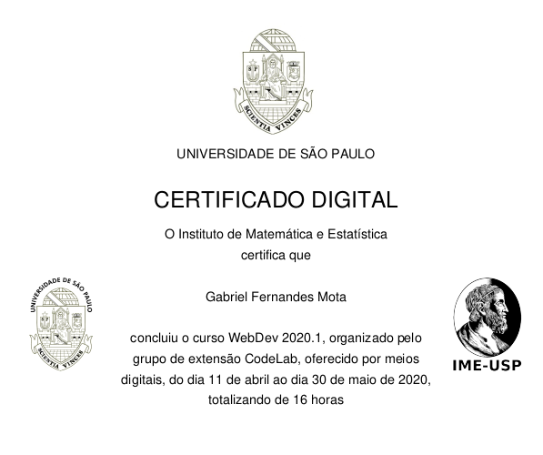
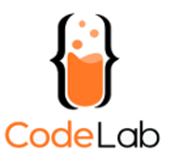

Sobre mim
Nasci em ,
tenho 19 anos e hoje estudo na Universidade de São Paulo. Aos 15 anos, me mudei para
,
onde cursei o ensino médio no CAP-Coluni da UFV. Em 2020, iniciei meus estudos no
Instituto de Matemática e Estatística-IME no curso de Bacharelado em Ciência da Computação e me mudei para
.
Atualmente estou no 3º semestre e com muita vontade de aprender e me desenvolver profissionalmente na área de desenvolvimento de software.
Clique nas localidades no texto ao lado
Habilidades e Experiência
Domínio sobre Python e seu uso junto de SQL,
certificado pela University of Michigan no conjunto de cursos Python for Everybody,
que cobre desde suas funções básicas e
estrutura de dados, até
acesso a dados da internet,
uso de banco de dados e
visualização desses.
Para praticar o que aprendi nesse curso e na graduação sobre Python e uso de dados, desenvolvi um projeto open-source, o SmartBookcase, o qual se encontra no meu GitHub.
Para praticar o que aprendi nesse curso e na graduação sobre Python e uso de dados, desenvolvi um projeto open-source, o SmartBookcase, o qual se encontra no meu GitHub.
Domínio sobre HTML, CSS e JavaScript
certificado pelo Instituto de Matemática e Estatística, IME-USP, no curso WebDev promovido pelo
USPCodeLab.
Essa mesma página foi feita só com uso dessas tecnologias e também o framework front-end Foundation, e o código dessa página esta disponível também aqui, no meu GitHub.
Essa mesma página foi feita só com uso dessas tecnologias e também o framework front-end Foundation, e o código dessa página esta disponível também aqui, no meu GitHub.

WebDev 2020.1
Conhecimento básico de Django, certificado pela University of Michigan no curso
Web Application Technologies and Django
e Building Web Applications in Django,
além de interesse em aprender mais e já cursando o restante dos cursos do Django for Everybody.
Participo do grupo de extensão do USPCodeLab desde o ano passado, o qual tem como
objetivo o estudo de novas tecnologias. Nele, participei do DevBoost, um projeto open-source em grupo
de desenvolvimento web, no qual participei no back-end
e front-end, ambos possuem repositórios abertos no GitHub
e você pode ver as minhas colaborações no meu GitHub.

Saiba mais